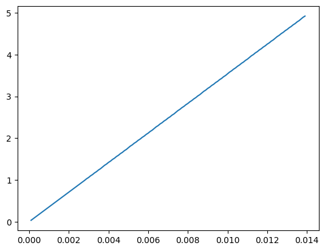

import itertools
import numpy as np
import pandas as pdCalculating line widths for flux maps
For this, rather than taking values from solutions the values are inputted manually from the escher maps. It would be better from the solution dfs but I don’t fancy coding this at the moment…
conditions_permutations = [
["blue", "white", "nops"],
["unconstrained", "constrained"],
["wt", "starchko"],
["fluxes", "minimum", "maximum"],
]
solutions_df_columns = pd.MultiIndex.from_product(
conditions_permutations, names=["Light", "ATPase", "Starch", "Solution"]
)
solutions_df = pd.DataFrame(columns=solutions_df_columns)
conditions_list_of_lists = [
["blue", "white", "nops"],
["unconstrained", "constrained"],
["wt", "starchko"],
]
conditions_iterations = list(itertools.product(*conditions_list_of_lists))
cols_to_drop = []
for conditions in conditions_iterations:
light_condition, atpase_condition, starch_condition = conditions
file_name = f"../outputs/model_solutions/{light_condition}_{atpase_condition}_{starch_condition}.csv"
try:
condition_df = pd.read_csv(file_name, index_col=0)
for col in ["fluxes", "minimum", "maximum"]:
solutions_df.loc[
:, (light_condition, atpase_condition, starch_condition, col)
] = condition_df.loc[:, col]
except:
cols_to_drop.append(conditions)
print(f"File {file_name} doesn't exist, skipping")
solutions_df_unphased = solutions_df.copy()
index_phased = pd.MultiIndex.from_tuples(
[
(reaction[:-2], int(reaction[-1]))
if reaction[-1] in ["1", "2", "3", "4"]
else (reaction, None)
for reaction in solutions_df.index
],
names=["Reaction", "Phase"],
)
solutions_df.index = index_phased
solutions_df = solutions_df.drop(cols_to_drop, axis=1)/tmp/ipykernel_3699541/2276567288.py:27: DeprecationWarning: In a future version, `df.iloc[:, i] = newvals` will attempt to set the values inplace instead of always setting a new array. To retain the old behavior, use either `df[df.columns[i]] = newvals` or, if columns are non-unique, `df.isetitem(i, newvals)`
solutions_df.loc[
/tmp/ipykernel_3699541/2276567288.py:27: DeprecationWarning: In a future version, `df.iloc[:, i] = newvals` will attempt to set the values inplace instead of always setting a new array. To retain the old behavior, use either `df[df.columns[i]] = newvals` or, if columns are non-unique, `df.isetitem(i, newvals)`
solutions_df.loc[
/tmp/ipykernel_3699541/2276567288.py:27: DeprecationWarning: In a future version, `df.iloc[:, i] = newvals` will attempt to set the values inplace instead of always setting a new array. To retain the old behavior, use either `df[df.columns[i]] = newvals` or, if columns are non-unique, `df.isetitem(i, newvals)`
solutions_df.loc[
/tmp/ipykernel_3699541/2276567288.py:27: DeprecationWarning: In a future version, `df.iloc[:, i] = newvals` will attempt to set the values inplace instead of always setting a new array. To retain the old behavior, use either `df[df.columns[i]] = newvals` or, if columns are non-unique, `df.isetitem(i, newvals)`
solutions_df.loc[
/tmp/ipykernel_3699541/2276567288.py:27: DeprecationWarning: In a future version, `df.iloc[:, i] = newvals` will attempt to set the values inplace instead of always setting a new array. To retain the old behavior, use either `df[df.columns[i]] = newvals` or, if columns are non-unique, `df.isetitem(i, newvals)`
solutions_df.loc[
/tmp/ipykernel_3699541/2276567288.py:27: DeprecationWarning: In a future version, `df.iloc[:, i] = newvals` will attempt to set the values inplace instead of always setting a new array. To retain the old behavior, use either `df[df.columns[i]] = newvals` or, if columns are non-unique, `df.isetitem(i, newvals)`
solutions_df.loc[
/tmp/ipykernel_3699541/2276567288.py:27: DeprecationWarning: In a future version, `df.iloc[:, i] = newvals` will attempt to set the values inplace instead of always setting a new array. To retain the old behavior, use either `df[df.columns[i]] = newvals` or, if columns are non-unique, `df.isetitem(i, newvals)`
solutions_df.loc[
/tmp/ipykernel_3699541/2276567288.py:27: DeprecationWarning: In a future version, `df.iloc[:, i] = newvals` will attempt to set the values inplace instead of always setting a new array. To retain the old behavior, use either `df[df.columns[i]] = newvals` or, if columns are non-unique, `df.isetitem(i, newvals)`
solutions_df.loc[
/tmp/ipykernel_3699541/2276567288.py:27: DeprecationWarning: In a future version, `df.iloc[:, i] = newvals` will attempt to set the values inplace instead of always setting a new array. To retain the old behavior, use either `df[df.columns[i]] = newvals` or, if columns are non-unique, `df.isetitem(i, newvals)`
solutions_df.loc[
/tmp/ipykernel_3699541/2276567288.py:27: DeprecationWarning: In a future version, `df.iloc[:, i] = newvals` will attempt to set the values inplace instead of always setting a new array. To retain the old behavior, use either `df[df.columns[i]] = newvals` or, if columns are non-unique, `df.isetitem(i, newvals)`
solutions_df.loc[
/tmp/ipykernel_3699541/2276567288.py:27: DeprecationWarning: In a future version, `df.iloc[:, i] = newvals` will attempt to set the values inplace instead of always setting a new array. To retain the old behavior, use either `df[df.columns[i]] = newvals` or, if columns are non-unique, `df.isetitem(i, newvals)`
solutions_df.loc[
/tmp/ipykernel_3699541/2276567288.py:27: DeprecationWarning: In a future version, `df.iloc[:, i] = newvals` will attempt to set the values inplace instead of always setting a new array. To retain the old behavior, use either `df[df.columns[i]] = newvals` or, if columns are non-unique, `df.isetitem(i, newvals)`
solutions_df.loc[solutions_df = solutions_df.xs("fluxes", level="Solution", axis=1).xs(2, level="Phase")flux_dict_used_for_current_lines = {
"blue": {
"unconstrained": {
"wt": {
"mal_to_suc": 0.000829, # "PEPCARBOXYKIN_RXN_c_gc_2"
"mal_deg": 0.000768, # "MALIC_NAD_RXN_m_gc_2"
"mal_v_c": 0.0106, # "MAL_vc_gc_2"
},
"starchko": {
"mal_to_suc": 0.000829, # "PEPCARBOXYKIN_RXN_c_gc_2"
"mal_deg": 0.000768, # "MALIC_NAD_RXN_m_gc_2"
"mal_v_c": 0.0106, # "MAL_vc_gc_2"
},
},
"constrained": {
"wt": {
"starch_to_glc": 0.00715, # "RXN_1827_p_gc_2"
"mal_deg": 0.000537, # "MALIC_NAD_RXN_m_gc_2"
"mal_v_c": 0.00358, # "MAL_vc_gc_2"
},
"starchko": {
"mal_deg": 0.000351, # "PEPCARBOXYKIN_RXN_c_gc_2"
"mal_v_c": 0.00234, # "MAL_vc_gc_2"
"suc_v_deg": 0.0141, # "RXN_1461_v_gc_2"
}
}
},
"white": {
"constrained": {
"wt": {
"starch_to_glc": 0.00675, # "RXN_1827_p_gc_2"
"ps_to_suc": 0.00103, # "SUCROSE_PHOSPHATE_SYNTHASE_RXN_c_gc_2"
"mal_v_c": 0.00503, # "MAL_vc_gc_2"
"mal_to_suc": 0.000754, # "PEPCARBOXYKIN_RXN_c_gc_2"
},
"starchko": {
"suc_v_deg": 0.0115, # "RXN_1461_v_gc_2"
"mal_c_v": 0.00342, # "MAL_cv_gc_2"
"ps_to_glc": 0.00128, # "GLUC1PURIDYLTRANS_RXN_c_gc_2"
"ps_to_ser": 0.00103, # "PSERTRANSAM_RXN_p_gc_2"
"lasp_to_mal": 0.00103, # "ASPAMINOTRANS_RXN_c_gc_2"
}
}
},
"nops": {
"constrained": {
"wt": {
"starch_to_glc": 0.00539, # "GLC_pc_gc_2"
"starch_to_glc_mal": 0.000281, # "MALTODEG_RXN_c_gc_2"
"suc_v_deg": 0.00301, # RXN_1461_v_gc_2"
"suc_c_v": 0.00301, # SUCROSE_PROTON_cv_gc_2"
"suc_c_deg": 0.00453, # "RXN_1461_c_gc_2"
"cit_to_mal": 0.0011, # "FUMHYDR_RXN_m_gc_2"
"starch_to_mal": 0.000281, # "MALTODEG_RXN_c_gc_2"
},
"starchko": {
"suc_c_deg": 0.00415, # "RXN_1461_c_gc_2"
"suc_v_deg": 0.00963, # RXN_1461_v_gc_2"
"suc_c_v": 0.00507, # SUCROSE_PROTON_cv_gc_2"
"mal_v_c": 0.00321, # "MAL_vc_gc_2"
"cit_to_mal": 0.000964, # "FUMHYDR_RXN_m_gc_2"
}
}
}
}flux_dict = {
"blue": {
"unconstrained": {
"wt": {
"mal_to_suc": "PEPCARBOXYKIN_RXN_c_gc_2",
"mal_deg": "MALIC_NAD_RXN_m_gc_2",
"mal_v_c": "MAL_vc_gc_2",
},
"starchko": {
"mal_to_suc": "PEPCARBOXYKIN_RXN_c_gc_2",
"mal_deg": "MALIC_NAD_RXN_m_gc_2",
"mal_v_c": "MAL_vc_gc_2",
},
},
"constrained": {
"wt": {
"starch_to_glc": "RXN_1827_p_gc_2",
"mal_deg": "MALIC_NAD_RXN_m_gc_2",
"mal_v_c": "MAL_vc_gc_2",
},
"starchko": {
"mal_deg": "PEPCARBOXYKIN_RXN_c_gc_2",
"mal_v_c": "MAL_vc_gc_2",
"suc_v_deg": "RXN_1461_v_gc_2",
}
}
},
"white": {
"constrained": {
"wt": {
"starch_to_glc": "RXN_1827_p_gc_2",
"ps_to_suc": "SUCROSE_PHOSPHATE_SYNTHASE_RXN_c_gc_2",
"mal_v_c": "MAL_vc_gc_2",
"mal_to_suc": "PEPCARBOXYKIN_RXN_c_gc_2",
},
"starchko": {
"suc_v_deg": "RXN_1461_v_gc_2",
"mal_c_v": "MAL_cv_gc_2",
"ps_to_glc": "GLUC1PURIDYLTRANS_RXN_c_gc_2",
"ps_to_ser": "PSERTRANSAM_RXN_p_gc_2",
"lasp_to_mal": "ASPAMINOTRANS_RXN_c_gc_2",
}
}
},
"nops": {
"constrained": {
"wt": {
"starch_to_glc": "GLC_pc_gc_2",
"starch_to_glc_mal": "MALTODEG_RXN_c_gc_2",
"suc_v_deg": "RXN_1461_v_gc_2",
"suc_c_v": "SUCROSE_PROTON_cv_gc_2",
"suc_c_deg": "RXN_1461_c_gc_2",
"cit_to_mal": "FUMHYDR_RXN_m_gc_2",
"starch_to_mal": "MALTODEG_RXN_c_gc_2",
},
"starchko": {
"suc_c_deg": "RXN_1461_c_gc_2",
"suc_v_deg": "RXN_1461_v_gc_2",
"suc_c_v": "SUCROSE_PROTON_cv_gc_2",
"mal_v_c": "MAL_vc_gc_2",
"cit_to_mal": "FUMHYDR_RXN_m_gc_2",
}
}
}
}conditions_list_of_lists = [
["blue", "white", "nops"],
["unconstrained", "constrained"],
["wt", "starchko"],
]
conditions_iterations = list(itertools.product(*conditions_list_of_lists))for light, light_dict in flux_dict.items():
for atpase, atpase_dict in light_dict.items():
for starch, starch_dict in atpase_dict.items():
for shorthand, reaction_name in starch_dict.items():
flux_dict[light][atpase][starch][shorthand] = solutions_df.loc[reaction_name[:-2],
(light, atpase, starch)]solutions_df.loc["GLUC1PURIDYLTRANS_RXN_c_gc"]Light ATPase Starch
blue unconstrained wt 0.000207
starchko 0.000207
constrained wt 0.000000
starchko 0.000000
white unconstrained wt 0.001035
starchko 0.001035
constrained wt 0.001034
starchko 0.001277
nops unconstrained wt -0.000181
starchko -0.000181
constrained wt 0.000000
starchko 0.000000
Name: GLUC1PURIDYLTRANS_RXN_c_gc, dtype: float64flux_dict{'blue': {'unconstrained': {'wt': {'mal_to_suc': 0.0008289898627844,
'mal_deg': 0.0007676620759999,
'mal_v_c': 0.0106443462585623},
'starchko': {'mal_to_suc': 0.0008290421603011,
'mal_deg': 0.0007676645791103,
'mal_v_c': 0.0106447115960767}},
'constrained': {'wt': {'starch_to_glc': 0.0071546631221892,
'mal_deg': 0.0005368531416866,
'mal_v_c': 0.0035790209445786},
'starchko': {'mal_deg': 0.0003506965771044,
'mal_v_c': 0.0023379771806966,
'suc_v_deg': 0.0141231690783069}}},
'white': {'constrained': {'wt': {'starch_to_glc': 0.0067465664160409,
'ps_to_suc': 0.001033719635386,
'mal_v_c': 0.0050291967341846,
'mal_to_suc': 0.000754379510124},
'starchko': {'suc_v_deg': 0.01146912726653,
'mal_c_v': 0.0034203466880023,
'ps_to_glc': 0.0012772416843743,
'ps_to_ser': 0.0010261040064381,
'lasp_to_mal': 0.0010261040065314}}},
'nops': {'constrained': {'wt': {'starch_to_glc': 0.0053907431500898,
'starch_to_glc_mal': 0.0002812795634735,
'suc_v_deg': 0.0030110403954825,
'suc_c_v': 0.0030110403954826,
'suc_c_deg': 0.0045268507213508,
'cit_to_mal': 0.001125118253894,
'starch_to_mal': 0.0002812795634735},
'starchko': {'suc_c_deg': 0.0041457644120233,
'suc_v_deg': 0.0096267085453205,
'suc_c_v': 0.0050687919815562,
'mal_v_c': 0.0032123783212751,
'cit_to_mal': 0.0009637130634997}}}}from sigfig import roundfor light in flux_dict.keys():
for atpase in flux_dict[light].keys():
for starch in flux_dict[light][atpase].keys():
for reaction in flux_dict[light][atpase][starch].keys():
if round(flux_dict[light][atpase][starch][reaction], sigfigs=3) - flux_dict_used_for_current_lines[light][atpase][starch][reaction] != 0:
print(light, atpase, starch, reaction, round(
flux_dict[light][atpase][starch][reaction], sigfigs=3), flux_dict_used_for_current_lines[light][atpase][starch][reaction])nops constrained wt cit_to_mal 0.00113 0.0011def NestedDictValues(d):
for v in d.values():
if isinstance(v, dict):
yield from NestedDictValues(v)
else:
yield vmin_flux = np.array(list(NestedDictValues(flux_dict))).min()
min_flux0.0002812795634735max_flux = np.array(list(NestedDictValues(flux_dict))).max()
max_flux0.0141231690783069max_flux/min_flux50.210434430077164So we have a 50-fold difference between the smallest and largest flux. 5mm in the inkscape figures that I’ve created is probably the max I can do, so 0.1 is the minimum.
Inkscape will only do widths to nearest 0.01mm I think, but allows you to input 3 numbers after the dp.
def convert_fluxes_to_widths_linear(flux):
max_width_in_inkscape = 5
conversion = max_width_in_inkscape/max_flux
new_flux = conversion*flux
new_flux_rounded = round(new_flux, 3)
return new_flux_roundedimport matplotlib.pyplot as pltx = np.arange(0.0001, 0.014, 0.0001)
y = [convert_fluxes_to_widths_linear(flux) for flux in x]
plt.plot(x, y)
import copydef convert_flux_dict(flux_dict):
converted_dict = copy.deepcopy(flux_dict)
for light_value, light_dict in flux_dict.items():
for atpase_constraint, atpase_dict in light_dict.items():
for phenotype, phenotype_dict in atpase_dict.items():
for reaction, reaction_value in phenotype_dict.items():
converted_dict[light_value][atpase_constraint][phenotype][reaction] = convert_fluxes_to_widths_linear(
reaction_value)
return converted_dictconverted_dict = convert_flux_dict(flux_dict)/home/nls119/lib/miniconda3/envs/mmon-gcm/lib/python3.10/site-packages/sigfig/sigfig.py:586: UserWarning: warning: 3 significant figures requested from number with only 2 significant figures
warn("warning: %d significant figures requested from number with only %d significant figures" % (given['sigfigs'], len(num.map)))for light, light_dict in converted_dict.items():
for atpase, atpase_dict in light_dict.items():
for starch, starch_dict in atpase_dict.items():
print(f"{light}_{atpase}_{starch}:")
for shorthand, mm in starch_dict.items():
print(f"{shorthand} should be {mm}mm wide")
print("\n")blue_unconstrained_wt:
mal_to_suc should be 0.293mm wide
mal_deg should be 0.272mm wide
mal_v_c should be 3.77mm wide
blue_unconstrained_starchko:
mal_to_suc should be 0.294mm wide
mal_deg should be 0.272mm wide
mal_v_c should be 3.77mm wide
blue_constrained_wt:
starch_to_glc should be 2.53mm wide
mal_deg should be 0.19mm wide
mal_v_c should be 1.27mm wide
blue_constrained_starchko:
mal_deg should be 0.124mm wide
mal_v_c should be 0.828mm wide
suc_v_deg should be 5.0mm wide
white_constrained_wt:
starch_to_glc should be 2.39mm wide
ps_to_suc should be 0.366mm wide
mal_v_c should be 1.78mm wide
mal_to_suc should be 0.267mm wide
white_constrained_starchko:
suc_v_deg should be 4.06mm wide
mal_c_v should be 1.21mm wide
ps_to_glc should be 0.452mm wide
ps_to_ser should be 0.363mm wide
lasp_to_mal should be 0.363mm wide
nops_constrained_wt:
starch_to_glc should be 1.91mm wide
starch_to_glc_mal should be 0.0996mm wide
suc_v_deg should be 1.07mm wide
suc_c_v should be 1.07mm wide
suc_c_deg should be 1.6mm wide
cit_to_mal should be 0.398mm wide
starch_to_mal should be 0.0996mm wide
nops_constrained_starchko:
suc_c_deg should be 1.47mm wide
suc_v_deg should be 3.41mm wide
suc_c_v should be 1.79mm wide
mal_v_c should be 1.14mm wide
cit_to_mal should be 0.341mm wide
For the key:
import cobra
import pandas as pd
from mmon_gcm.supermodel import SuperModelparameters_df = pd.read_csv("../inputs/arabidopsis_parameters.csv", index_col=0)
four_stage_GC_model = cobra.io.sbml.read_sbml_model("../models/4_stage_GC.xml") # read model
arabidopsis_supermodel = SuperModel(parameters_df.loc[:, "Value"], fba_model=four_stage_GC_model);No objective coefficients in model. Unclear what should be optimized
/home/nls119/src/mmon-gcm2/mmon_gcm/supermodel.py:25: FutureWarning: iteritems is deprecated and will be removed in a future version. Use .items instead.
for parameter, value in parameters.iteritems():arabidopsis_supermodel.N_gcs580000000.00.01/arabidopsis_supermodel.N_gcs1.724137931034483e-11moles_gc_h = 10 * 10 ** -15 # fmolesgc-1h-1moles_m2_h = moles_gc_h*arabidopsis_supermodel.N_gcs # molesh-1mmoles_m2_h = moles_m2_h * 10 ** 3
mmoles_m2_h0.005800000000000001f"{convert_fluxes_to_widths_linear(mmoles_m2_h)}mm for a flux of 10 fmoles gc-1 h-1"'2.05mm for a flux of 10 fmoles gc-1 h-1'